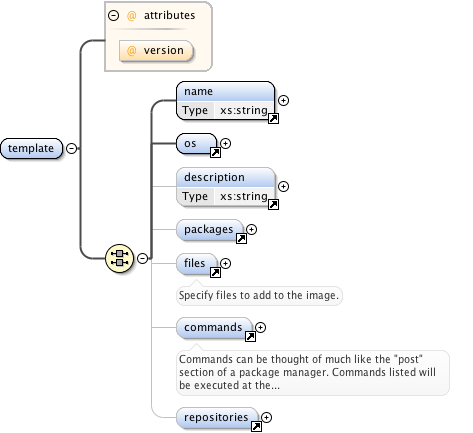

编写TDL文件
TDL 文件为一个xml格式的文件，其完整的元素组成如下图所示：

如上图（图片来自：http://imgfac.org/documentation/tdl/TDL.html）所示，TDL文件中name 和 os 为必须元素，分别定义了模板的名称和os 镜像的描述，其他的为可选元素。详尽的模板元素说明请参考：https://github.com/clalancette/oz/wiki/Oz-template-description-language。
尽管可以通过TDL 文件的可选元素定义安装过程中的其他任务，例如：通过package元素定义需要安装的三方包，但是通常在TDL文件中只用到了其必须的元素用来定义一个操作系统的安装任务，其他定制化的任务在kickstart 中完成。
Tdl文件支持两种镜像来源：一种是iso，另一种是url，它们之间的差异是：采用iso类型时oz需要能够获取源镜像文件；URL类型则是从远程服务器获取iso解压后的文件。
以下是制作RVM 镜像时，用到的TDL文件
<template>
<name>centos7_cloud_x86_64</name>
<description>CentOS 7 x86_64 template</description>
<os>
<name>CentOS-7</name>
<version>4</version>
<arch>x86_64</arch>
<install type='iso'>
<iso>http://10.127.2.8/iso/CentOS-7-x86_64-Minimal-1708.iso</iso>
</install>
</os>
<disk>
<size>30</size>
</disk>
</template>
tdl文件模板：https://github.com/rcbops/oz-image-build/tree/master/templates
tdl文件裁剪示例：https://github.com/clalancette/oz/wiki/oz-examples#EXAMPLE_3__Guest_with_additional_packages